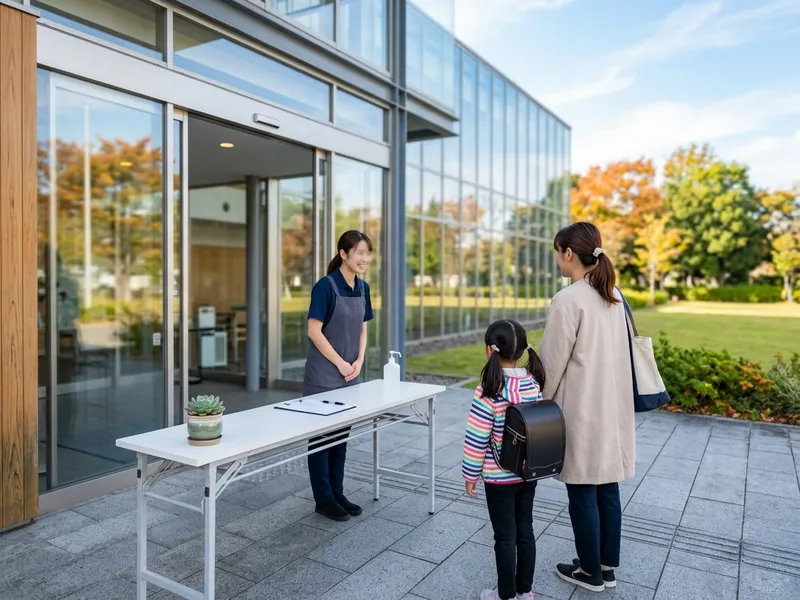
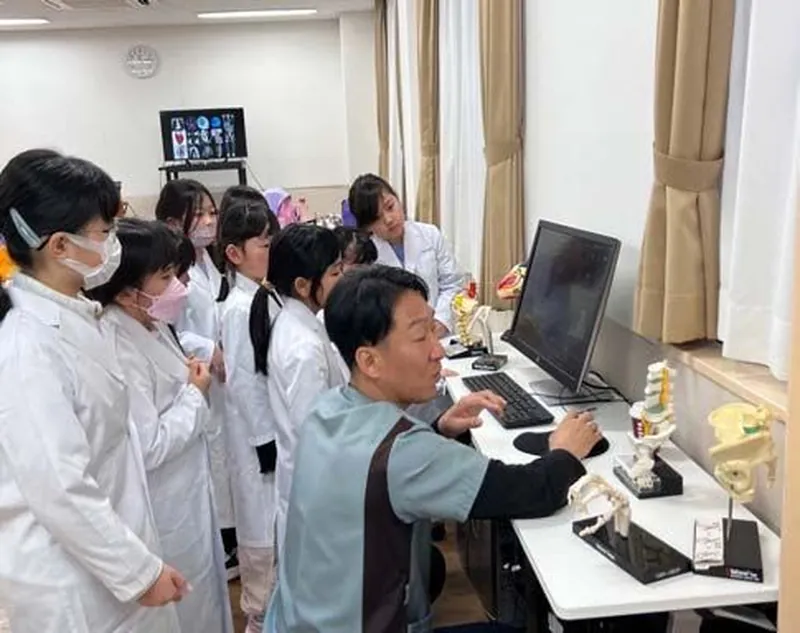
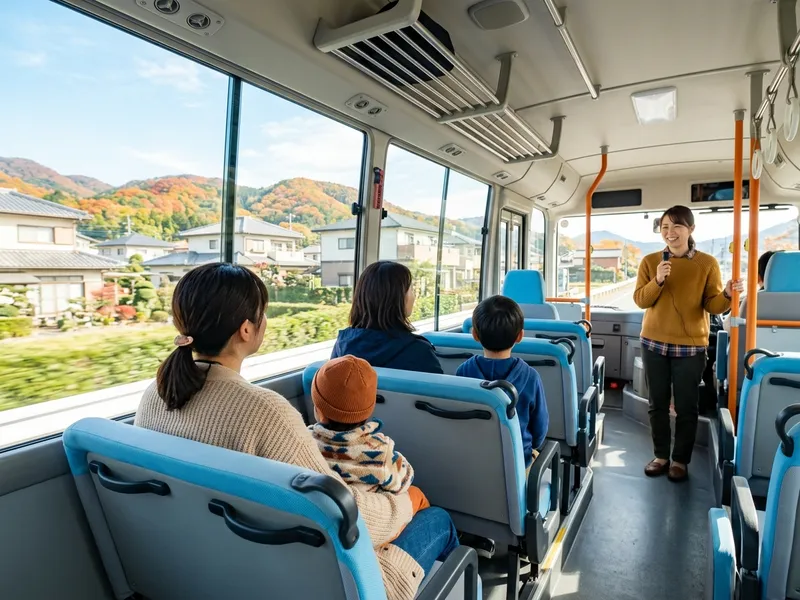
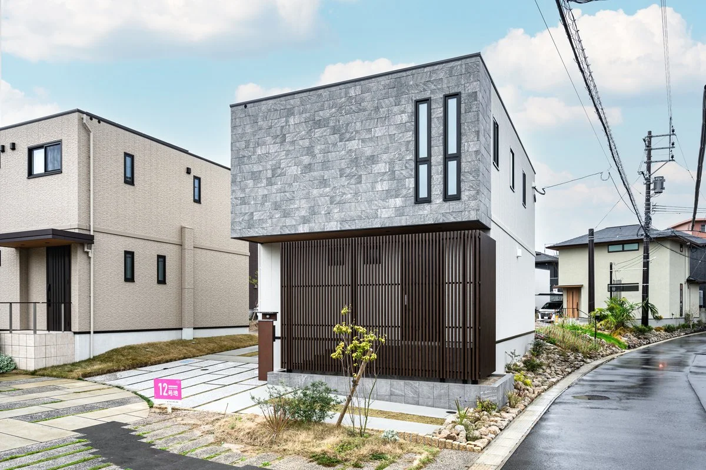
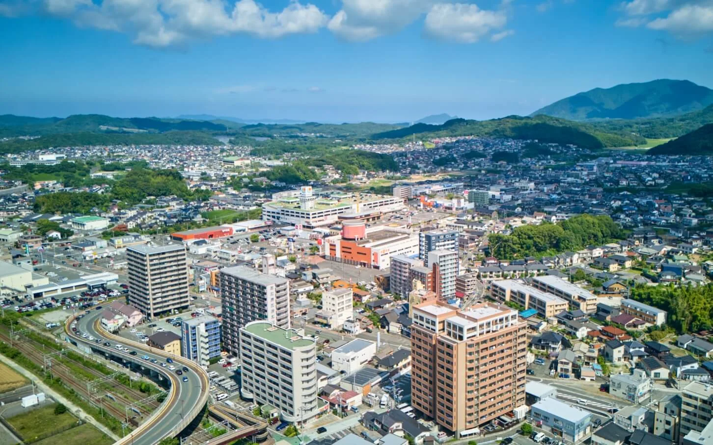
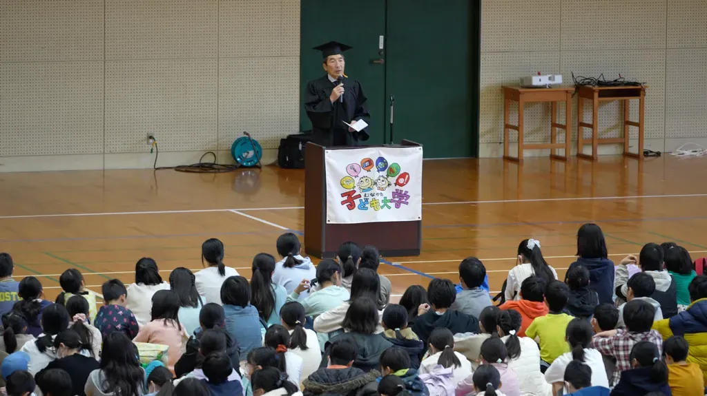

当日のスケジュール
※2026年11月3日(火・祝)の当日のスケジュールです。
グローバルアリーナ 集合・受付
現地集合で、グローバルアリーナ（宗像市吉留46-1）に本ツアーの受付を設けました。当日の流れの説明と自己紹介のあと、お子様と一緒に「むなかた子ども大学」の会場へ案内しました。

むなかた子ども大学「はじめの会」・講座見学
お子様は選んだコースの講座へ。保護者の方は「はじめの会」のあと、見学可能なコースを中心に、スタッフがまとめて会場を案内しました。

貸切バスで日の里エリアへ移動
保護者の方（未就学児のお子様もご一緒に）は貸切バスで日の里エリアへ。車内では事務局スタッフが、宗像の暮らしや街の様子を紹介しました。

先輩移住者とのランチ交流会（日の里）
実際に宗像市へ移住してきた先輩移住者を交えて、昼食をとりながら交流しました。生活コスト、通勤・通学、子育て環境など、気になる本音を直接聞く時間です。会場はJR東郷駅 日の里口前の地域交流拠点「CoCokaraひのさと」でした。

モデルハウス・分譲住宅 見学（日の里）
バスで約10分移動し、日の里エリアの新しいモデルハウス・分譲住宅を見学しました。住宅設備や間取り、周辺の住環境を見て回りました。

くりえいと宗像周辺の車窓見学
大型ショッピングモールや多彩な店舗が立ち並ぶ「くりえいと宗像」周辺をバスの車窓から見学しながら、グローバルアリーナへ戻りました。

「終わりの会」見学・現地解散
グローバルアリーナ到着後、お子様の1日の学びを締めくくる「終わりの会」の様子を見学しました。終了後にお子様と合流し、15:30頃に現地解散しました。
